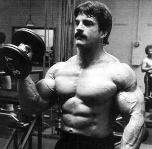
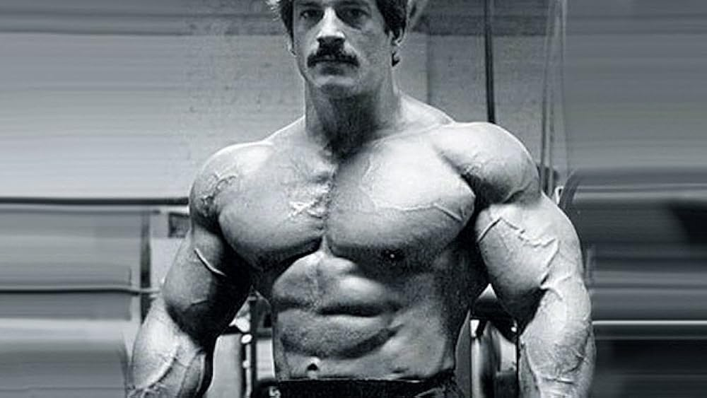

The Man Who Invented The High Intensity Workout(HIT)
Mike Mentzer (November 15, 1951 – June 10, 2001) was an American IFBB professional bodybuilder, businessman and author.
Born in Philadelphia, Pennsylvania, Mentzer started bodybuilding when he was 11 years old. He won several amateur bodybuilding competitions before turning professional in 1979, including the 1976 Mr. America title and the heavyweight division of the 1978 IFBB Mr. Universe.In late 1979, he won the heavyweight class of the Mr. Olympia, but lost in the overall to Frank Zane. In the 1980 Mr. Olympia he placed fourth in a tie with Boyer Coe behind Arnold Schwarzenegger, Chris Dickerson and Frank Zane. Influenced by the concepts developed by Arthur Jones, Mentzer devised and successfully implemented his own theory of bodybuilding. One of the most iconic bodybuilders of all time, his Heavy Duty Training program still inspires lifters to this day.In 2002, he was inducted into the IFBB Hall of Fame..


About
Born:-Mike Mentzer 15 November 1951 Philadelphia, Unites States Of America
Sibling:-Ray Mentzer Coach(s):- Joe Weider
Education
University Of Maryland (BA)
He studied at University Of Maryland from 1975 to 1978, where he received a first-class Bachelors in Physiology.
Awards
1971 Mr. Lancaster – 1st
1971 AAU Mr. America – 10th
1971 AAU Teen Mr America – 2nd
1975 IFBB Mr. America – 3rd (Medium)
1975 ABBA Mr. USA – 2nd (Medium)
HERE IS WHAT WE NEED TO KNOW ABOUT MIKE MENTZER
Mentzer was an Objectivist and insisted that philosophy and bodybuilding are one and the same, stating that "man is an indivisible entity, an integrated unit of mind and body." His books therefore concern themselves equally with philosophy and bodybuilding.
Mentzer followed the bodybuilding concepts developed by Arthur Jones and endeavored to perfect them. Through years of study, observation, knowledge of stress physiology, the most up-to-date scientific information available, and careful use of his reasoning abilities, Mentzer devised and successfully implemented his own theory of bodybuilding. Mentzer's theories are intended to help a drug-free person achieve his or her full genetic potential within the shortest amount of time.
High-Intensity Training the Mike Mentzer Way was Mentzer's final work. In it, he detailed the principles of high intensity weight training. Weight training, he insisted, had to be brief, infrequent, and intense, to attain the best results in the shortest amount of time. Heavy Duty II also espouses critical thinking. In this book, Mentzer shows why people need to use their reasoning ability to live happy, mature, adult lives, and he shows readers how to go about doing so. Bodybuilding was endorsed as only one potential component of an individual's existence, encouraging many other worthwhile pursuits throughout his books.
Mentzer believed that carbohydrates should make up the bulk of the caloric intake, 50–60%, rather than protein as others preferred. Mentzer's reasoning was simple: to build 10 pounds of muscle in a year, a total of 6000 extra calories needed to be ingested throughout the year, because one pound of muscle contains 600 calories. That averages 16 extra calories per day, and only four of them needed to be from protein—because muscle is 22% protein, about one quarter.
If you have time, you should read more about this incredible human being on his Wikipedia entry.